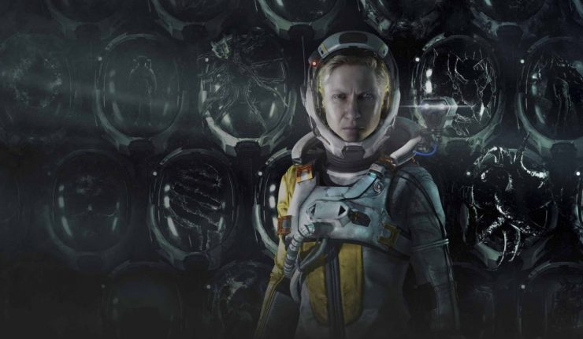

Todo sobre “Returnal”: Preventa, precio, trama y lanzamiento
El nuevo título exclusivo de PlayStation 5 se lanzará el próximo 30 de abril a nivel mundial, siendo uno de los estrenos más esperados del año. Acá, lo que tienes que saber sobre esta esperada aventura espacial.
Trama
La protagonista de la historia es Selene, una exploradora espacial de ASTRA con una enorme determinación, inteligencia y capacidad. Por primera vez en su carrera como astronauta, decide desafiar las órdenes recibidas y viajar al planeta alienígena Átropos en busca de una señal de transmisión. Al aterrizar sufre un inesperado accidente, chocando con un bosque en el que descubrirá las ruinas de una civilización alienígena, repleta de estatuas y cadáveres extraterrestres.
Review: “Nioh 2: The Complete Edition”, un juego para estrujar tu mente
La colección final del RPG está disponible en PC y PlayStation en una versión completa y mejorada y quisimos averiguar si vale la pena, considerando que incluye lo que se esperaría del paso a next-gen: menos tiempos de carga y un nuevo modo gráfico para PS5.
Han pasado cuatro años desde que el RPG a cargo de las desarrolladoras Team Ninja y Kou Shibusawa salió al mercado, ganándose calificaciones de cinco estrellas y algunas nominaciones, millones de ventas y un lugar entre los más queridos del género souls-like. Hoy tenemos el placer de disfrutarlo en formato colección completa, con segunda parte incluida, expansiones y un montón de mejoras.